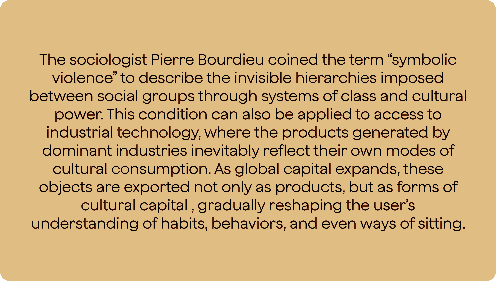
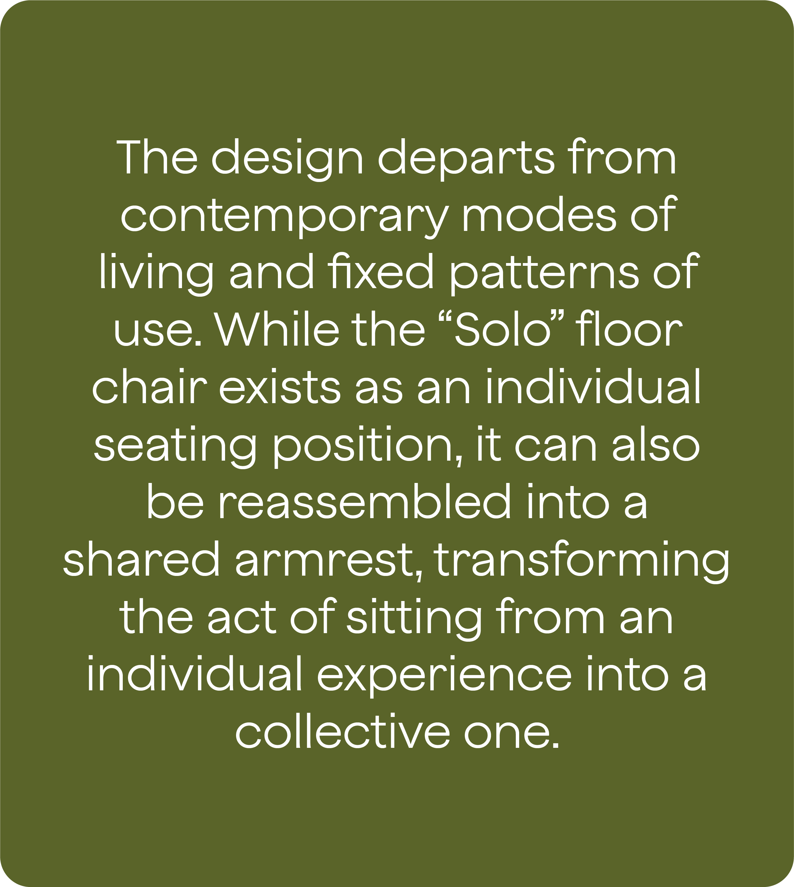
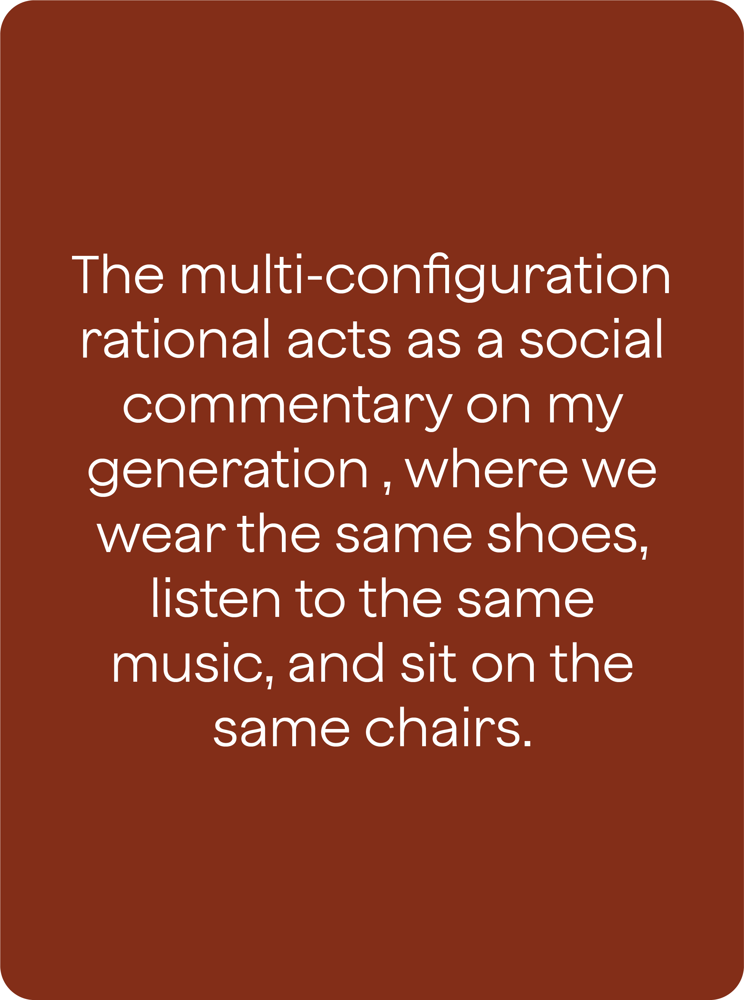
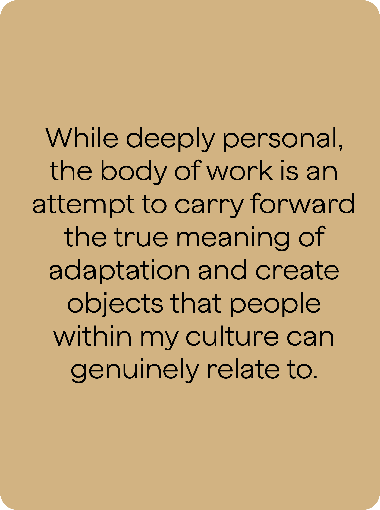
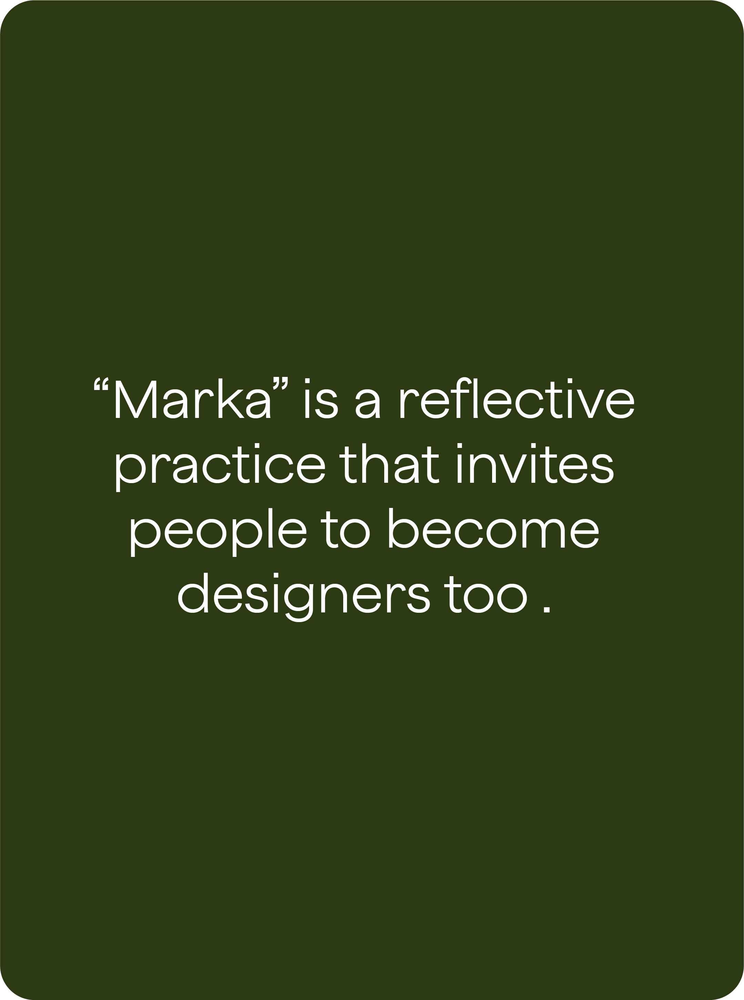
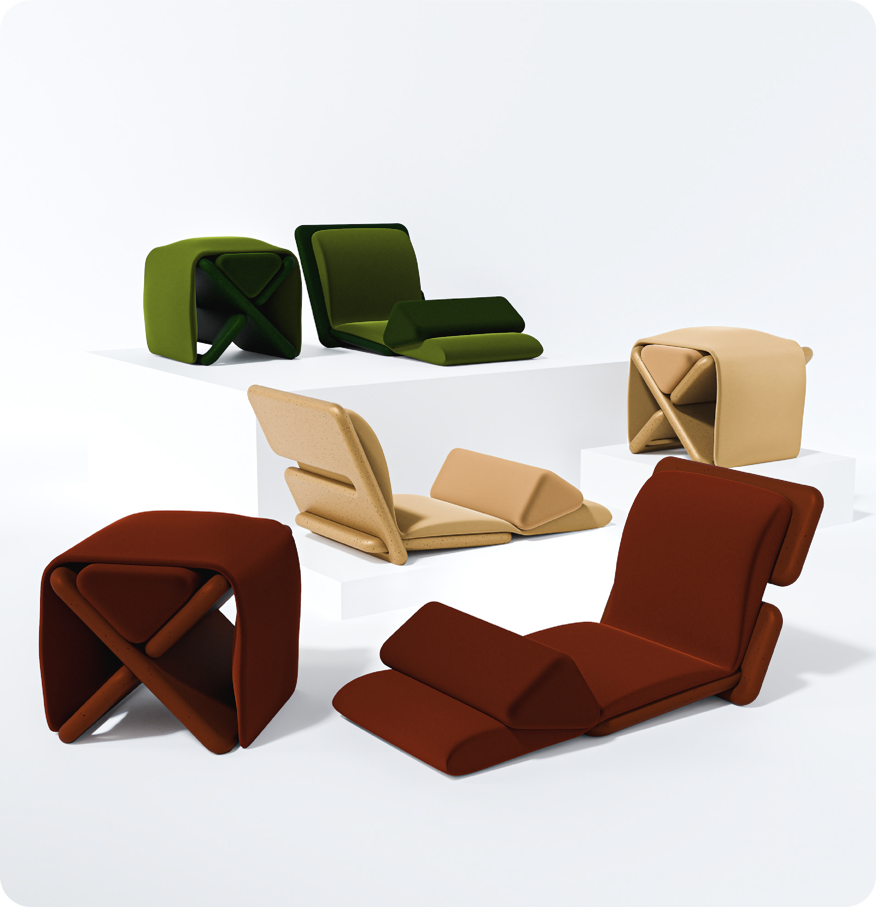
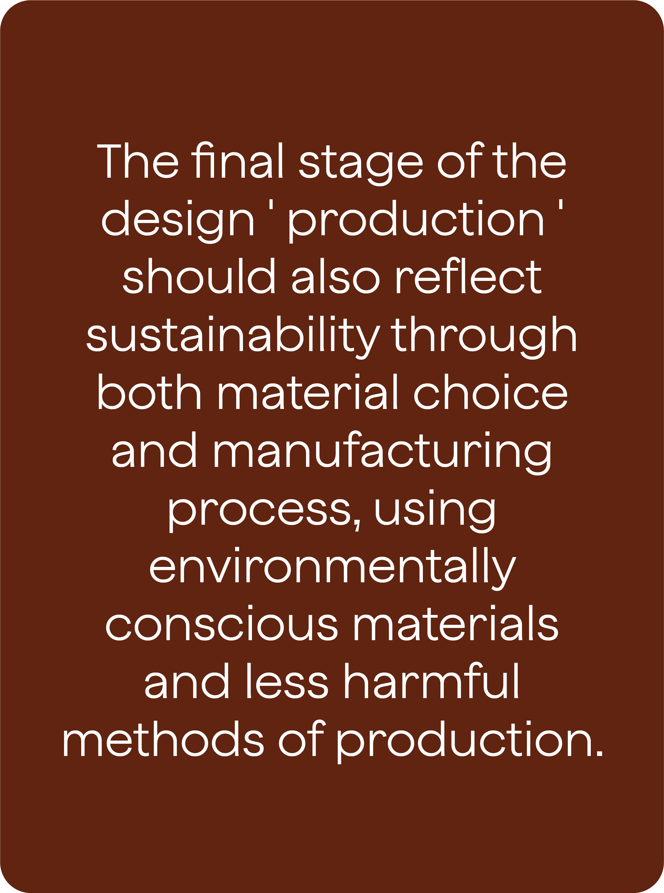

A critical design practice exploring the effects of technological overconsumption, accelerated capitalism, and rapid social development on the individual. It examines how systems of growth reshape identity, behavior, and human relationships within increasingly mediated societies. "Marka" (مركى) is a modular piece inspired by the collective memory of the Arabian Peninsula. Refusing fixed definition and celebrating freedom 'much like the Bedouin way of living,' it can function as a stool, ottoman, book holder, armrest, floor chair, or lounge chair depending on one's interaction with it.











